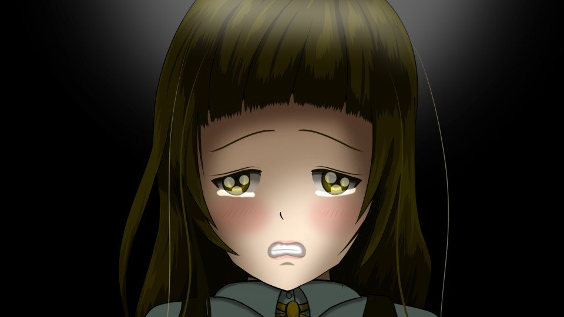
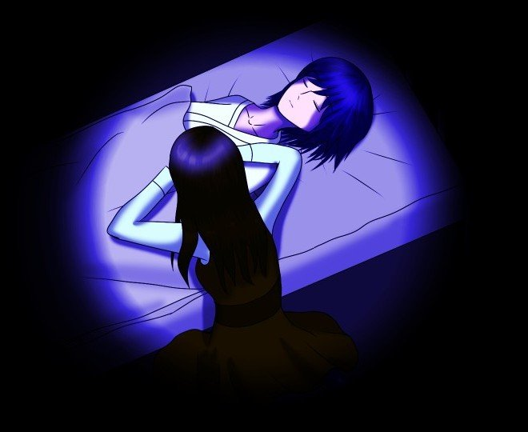

← All scenes
Eigo Kaiki Arc [Eternal Recurrence]
Flight
Eigo Kaiki Arc [Eternal Recurrence] · Unknown Date 0 · 2 boxes

"She has passed."
"
Niimura...
Senpai
...!"

"Come back...!
Don't leave me alone...!"
Mark as read
Read ✓
Next in this arc →